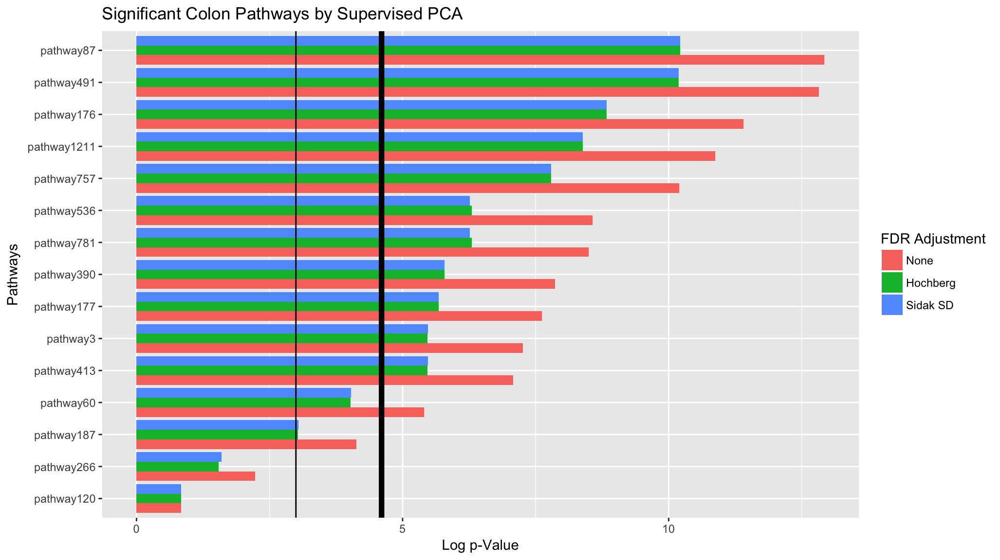

vignettes/C1-Quickstart_Guide.Rmd
C1-Quickstart_Guide.RmdThis guide will serve as a brief introduction to pathway significance testing with the pathwayPCA package. We will discuss four steps. For detailed discussion of these four steps, see the appropriate vignettes. This vignette is the introduction and overview chapter in the “Pathway Significance Testing with pathwayPCA” workflow.
Omics Data Objects (vignette)Before we get started, you need the pathwayPCA package to run your analysis. Because we are currently in the development phase for Bioconductor, you can install this package from GitHub. Also, if you want your analysis to be performed with parallel computing, you will need a package to help you. We recommend the parallel package. We also recommend the tidyverse package to help you run some of the examples in these vignettes (while the tidyverse package suite is required for many of the examples in the vignettes, it is not required for any of the functions in this package).
devtools::install_github("gabrielodom/pathwayPCA")library(pathwayPCA)
library(tidyverse)
#> -- Attaching packages ----------------------------------------------------------------------------------------------------- tidyverse 1.2.1 --
#> v ggplot2 2.2.1 v purrr 0.2.4
#> v tibble 1.4.2 v dplyr 0.7.4
#> v tidyr 0.8.0 v stringr 1.3.0
#> v readr 1.1.1 v forcats 0.3.0
#> -- Conflicts -------------------------------------------------------------------------------------------------------- tidyverse_conflicts() --
#> x dplyr::filter() masks stats::filter()
#> x dplyr::lag() masks stats::lag()
library(parallel)This section is a quick overview of the material covered in the Import and Tidy Data vignette. We will cover three data import steps.
.gmt FilesThe .gmt format is a commonly used file format for storing pathway set information. Gene sets in the Molecular Signatures Database (MSigDB) can be downloaded from the MSigDB Collections page. Use the read_gmt function to import a .gmt file into R. All .gmt files have a “description” field, but it can be empty. We use description = FALSE argument to skip importing that field.
gmt_path <- system.file("extdata", "c2.cp.v6.0.symbols.gmt",
package = "pathwayPCA", mustWork = TRUE)
gene_set_ls <- read_gmt(gmt_path, description = FALSE)
gene_set_ls#> Object with Class(es) 'pathwaySet', 'list' [package 'pathwayPCA'] with 2 elements:
#> $ pathways:List of 1329
#> $ TERMS : chr [1:1329] "KEGG_GLYCOLYSIS_GLUCONEOGENESIS" ...The imported .gmt file is stored as a pathwaySet list object. This list contains:
pathways),TERMS), anddescription) if you specify description = TRUE.Specifically, the description field contains any notes or details on the pathway that is stored in the second entry of each row of the .gmt file. This field is often left empty.
We assume that the assay data (e.g. transcriptomic data) is either in an Excel file or flat text file. For example, your data may look like this:
In this data set, the columns are individual samples. The values in each row are the -Omic expression measurements for that gene. Use the read_csv function from the readr package to import .csv files into R as tibble (table and data frame) objects. The read_csv function prints messages to the screen informing you of the assumptions it makes when importing your data. Specifically, this message tells us that all the imported data is numeric (col_double()) except for the gene name column (X1 = col_character()).
assay_path <- system.file("extdata", "ex_assay_subset.csv",
package = "pathwayPCA", mustWork = TRUE)
assay_df <- read_csv(assay_path)#> Warning: Missing column names filled in: 'X1' [1]
#> Parsed with column specification:
#> cols(
#> .default = col_double(),
#> X1 = col_character()
#> )
#> See spec(...) for full column specifications.Incidentally, we consider gene names to adhere to the following conditions:
Furthermore, if your data has samples in the columns and -omic feature measurements in the rows (like the data set above), you’ll need to “tidy” the imported assay with the transpose_assay function. Now see that the rows from our Excel file are the columns in the tidy data before performing data analysis.
#> # A tibble: 36 x 18
#> Sample SOAT1 LSS SQLE EBP CYP51A1 DHCR7 CYP27B1 DHCR24 HSD17B7
#> <chr> <dbl> <dbl> <dbl> <dbl> <dbl> <dbl> <dbl> <dbl> <dbl>
#> 1 T21101311 5.37 9.77 7.74 4.68 8.27 8.32 6.78 4.70 7.63
#> 2 T21101312 5.52 9.78 8.06 5.12 8.21 8.33 6.47 5.06 7.63
#> 3 T21101313 5.89 8.11 7.00 5.78 8.20 8.39 6.57 4.89 8.15
#> 4 T21101314 5.62 8.67 8.59 5.64 8.07 8.64 6.47 4.98 8.13
#> 5 T21101315 5.49 9.83 8.13 5.73 9.38 8.15 6.43 5.03 7.70
#> 6 T21101316 5.58 9.85 8.55 5.13 9.40 8.71 6.56 4.87 7.75
#> 7 T21101317 5.32 10.0 6.99 5.86 8.08 9.25 6.86 4.72 7.88
#> 8 T21101318 5.49 9.72 7.47 5.16 6.67 7.37 6.70 4.92 7.50
#> 9 T21101319 5.57 9.88 7.97 5.40 7.91 8.06 6.58 5.06 8.16
#> 10 T21101320 5.16 9.87 7.42 5.50 7.43 8.68 6.55 4.85 8.20
#> # ... with 26 more rows, and 8 more variables: MSMO1 <dbl>, FDFT1 <dbl>,
#> # SC5DL <dbl>, LIPA <dbl>, CEL <dbl>, TM7SF2 <dbl>, NSDHL <dbl>,
#> # SOAT2 <dbl>Use the read_csv function to import the phenotype data. Once again, the read_csv function displays a message informing us of the types of data in each column. This data is subject survival information which contains the subject ID (Sample), survival time after disease onset in months (eventTime), and an indicator if the subject died or was lost to follow up (eventObserved).
pInfo_path <- system.file("extdata", "ex_pInfo_subset.csv",
package = "pathwayPCA", mustWork = TRUE)
pInfo_df <- read_csv(pInfo_path)
pInfo_df#> Parsed with column specification:
#> cols(
#> Sample = col_character(),
#> eventTime = col_double(),
#> eventObserved = col_logical()
#> )
#> # A tibble: 36 x 3
#> Sample eventTime eventObserved
#> <chr> <dbl> <lgl>
#> 1 T21101311 14.2 TRUE
#> 2 T21101312 1.00 TRUE
#> 3 T21101313 6.75 FALSE
#> 4 T21101314 8.50 TRUE
#> 5 T21101315 7.25 FALSE
#> 6 T21101316 5.00 TRUE
#> 7 T21101317 20.0 TRUE
#> 8 T21101318 13.2 FALSE
#> 9 T21101319 7.75 FALSE
#> 10 T21101320 9.00 FALSE
#> # ... with 26 more rowsNow that you have the measurement data in tidy form (assayT_df) and the response data (pInfo_df), you can use the inner_join function from the dplyr package to match the assay measurements to phenotype information by subject identifier.
(joinedExperiment_df <- inner_join(pInfo_df, assayT_df, by = "Sample"))
#> # A tibble: 36 x 20
#> Sample eventTime eventObserved SOAT1 LSS SQLE EBP CYP51A1 DHCR7
#> <chr> <dbl> <lgl> <dbl> <dbl> <dbl> <dbl> <dbl> <dbl>
#> 1 T21101311 14.2 TRUE 5.37 9.77 7.74 4.68 8.27 8.32
#> 2 T21101312 1.00 TRUE 5.52 9.78 8.06 5.12 8.21 8.33
#> 3 T21101313 6.75 FALSE 5.89 8.11 7.00 5.78 8.20 8.39
#> 4 T21101314 8.50 TRUE 5.62 8.67 8.59 5.64 8.07 8.64
#> 5 T21101315 7.25 FALSE 5.49 9.83 8.13 5.73 9.38 8.15
#> 6 T21101316 5.00 TRUE 5.58 9.85 8.55 5.13 9.40 8.71
#> 7 T21101317 20.0 TRUE 5.32 10.0 6.99 5.86 8.08 9.25
#> 8 T21101318 13.2 FALSE 5.49 9.72 7.47 5.16 6.67 7.37
#> 9 T21101319 7.75 FALSE 5.57 9.88 7.97 5.40 7.91 8.06
#> 10 T21101320 9.00 FALSE 5.16 9.87 7.42 5.50 7.43 8.68
#> # ... with 26 more rows, and 11 more variables: CYP27B1 <dbl>,
#> # DHCR24 <dbl>, HSD17B7 <dbl>, MSMO1 <dbl>, FDFT1 <dbl>, SC5DL <dbl>,
#> # LIPA <dbl>, CEL <dbl>, TM7SF2 <dbl>, NSDHL <dbl>, SOAT2 <dbl>Omics Data ObjectThis section is a quick overview of the material covered in the Creating Data Objects vignette.
Using the data you just imported, create a data object specific to survival, regression, or categorical responses. There are three classes of Omics objects to match the three types of response, but only one function to learn: the create_Omics function. Each class contains assay information (in tidy format) and pathwaySet (in list format), but the classes differ in the type of response information they can hold. The classes, and their responses, are
OmicsSurv—a data object for survival information, which includes event time (the time of last follow-up with a subject) and event indicator (did the subject die, or was the observation right-censored).OmicsReg—a data object for continuous responses (usually a vector of linear regression responses).OmicsCateg—a data object for categorical responses, the dependent variable of a generalized linear model. Currently, we only support binary classification (through logistic regression).We will create a survival Omics object to hold our assay, pathway set list, and survival response.
colon_OmicsSurv <- create_Omics(assayData_df = colonSurv_df[, -(1:2)],
pathwaySet_ls = colon_pathwaySet,
response = colonSurv_df[, 1:2],
respType = "surv")
#> Creating object of class OmicsSurv.After you create an Omics object, print the object to the screen to view a summary of the data contained therein.
colon_OmicsSurv
#> Formal class 'OmicsSurv' [package "pathwayPCA"] with 4 slots
#> ..@ eventTime : num [1:250] 64.9 59.8 62.4 54.5 46.3 ...
#> ..@ eventObserved: logi [1:250] FALSE FALSE FALSE FALSE TRUE FALSE ...
#> ..@ assayData_df :Classes 'tbl_df', 'tbl' and 'data.frame': 250 obs. of 656 variables:
#> ..@ pathwaySet :List of 3
#> .. ..- attr(*, "class")= chr [1:2] "pathwaySet" "list"Because the printing procedure for Omics objects is to show a summary of the contents, you need to use the get*() functions to view the individual components of the colon_OmicsSurv object we just created. Overall, you can use accessor functions to extract, edit, or replace data contained in the object. The accessor functions are listed in more detail in the Table of Accessors subsection of Chapter 3. Use these functions to confirm that the data object you created accurately reflects the data you intend to analyze.
getAssay(colon_OmicsSurv)
#> # A tibble: 250 x 656
#> JUN SOS2 PAK3 RAF1 PRKCB BTC SHC1 PRKCA ELK1 NRG1 PAK2 MTOR
#> <dbl> <dbl> <dbl> <dbl> <dbl> <dbl> <dbl> <dbl> <dbl> <dbl> <dbl> <dbl>
#> 1 9.29 5.48 8.21 8.03 5.49 6.65 8.26 8.94 7.38 7.50 7.32 6.96
#> 2 9.13 6.35 8.33 7.94 6.26 7.02 8.39 9.61 7.53 7.68 6.80 6.96
#> 3 9.37 5.67 7.82 7.74 6.05 7.52 8.69 8.40 7.25 7.33 7.48 7.15
#> 4 10.6 4.94 8.79 7.64 5.37 6.87 7.81 9.80 7.79 8.38 6.16 6.48
#> 5 8.70 5.60 8.75 8.05 6.07 6.49 8.45 8.21 7.60 6.65 7.04 6.66
#> 6 9.78 5.36 7.56 8.07 5.90 6.39 8.87 8.22 7.35 7.83 7.39 6.90
#> 7 9.22 5.05 8.20 7.80 5.55 6.86 8.28 8.97 7.43 7.20 7.04 6.96
#> 8 10.3 5.33 7.82 7.89 6.27 6.25 8.66 9.71 7.38 7.09 7.22 7.11
#> 9 10.8 5.07 7.63 7.69 5.48 7.57 8.36 9.69 6.66 7.22 6.99 6.89
#> 10 9.52 5.50 7.48 7.53 5.71 7.33 8.54 8.14 6.88 7.31 7.01 6.82
#> # ... with 240 more rows, and 644 more variables: PAK4 <dbl>,
#> # MAP2K4 <dbl>, EIF4EBP1 <dbl>, BAD <dbl>, PRKCG <dbl>, NRG3 <dbl>,
#> # MAPK9 <dbl>, ERBB4 <dbl>, MAPK10 <dbl>, PTK2 <dbl>, ERBB2 <dbl>,
#> # ERBB3 <dbl>, MAP2K2 <dbl>, TGFA <dbl>, BRAF <dbl>, MAP2K1 <dbl>,
#> # MAP2K7 <dbl>, ABL1 <dbl>, NRG2 <dbl>, AKT1 <dbl>, ABL2 <dbl>,
#> # AKT2 <dbl>, SHC4 <dbl>, RPS6KB1 <dbl>, RPS6KB2 <dbl>, AKT3 <dbl>,
#> # NRAS <dbl>, GRB2 <dbl>, AREG <dbl>, STAT5B <dbl>, MAPK3 <dbl>,
#> # STAT5A <dbl>, PAK6 <dbl>, SOS1 <dbl>, MYC <dbl>, MAPK1 <dbl>,
#> # NCK1 <dbl>, PIK3R5 <dbl>, NRG4 <dbl>, HRAS <dbl>, MAPK8 <dbl>,
#> # EGFR <dbl>, GSK3B <dbl>, CBLB <dbl>, KRAS <dbl>, CBL <dbl>,
#> # SHC3 <dbl>, CDKN1B <dbl>, CDKN1A <dbl>, EGF <dbl>, EREG <dbl>,
#> # ARAF <dbl>, NCK2 <dbl>, SRC <dbl>, PIK3R3 <dbl>, CAMK2A <dbl>,
#> # CAMK2B <dbl>, CAMK2D <dbl>, CAMK2G <dbl>, PAK1 <dbl>, CBLC <dbl>,
#> # CRK <dbl>, PIK3CA <dbl>, PIK3CB <dbl>, CRKL <dbl>, PIK3CD <dbl>,
#> # GAB1 <dbl>, PLCG1 <dbl>, PLCG2 <dbl>, SHC2 <dbl>, HBEGF <dbl>,
#> # PIK3CG <dbl>, PIK3R1 <dbl>, PIK3R2 <dbl>, EPHB2 <dbl>, EPHB4 <dbl>,
#> # EFNA5 <dbl>, PXN <dbl>, CDC42 <dbl>, EFNB3 <dbl>, RRAS <dbl>,
#> # GRB7 <dbl>, SYNJ1 <dbl>, EPHB3 <dbl>, EFNB1 <dbl>, DNM1 <dbl>,
#> # MAP4K4 <dbl>, GRIA1 <dbl>, EPHB1 <dbl>, ROCK1 <dbl>, ITSN1 <dbl>,
#> # RAP1A <dbl>, RAC1 <dbl>, RAP1B <dbl>, EFNB2 <dbl>, WASL <dbl>,
#> # TF <dbl>, KALRN <dbl>, RASA1 <dbl>, CASP9 <dbl>, ...pathwaySet ListgetPathwaySet(colon_OmicsSurv)
#> Object with Class(es) 'pathwaySet', 'list' [package 'pathwayPCA'] with 3 elements:
#> $ pathways:List of 15
#> $ TERMS : Named chr [1:15] "KEGG_PENTOSE_PHOSPHATE_PATHWAY" ...
#> $ setsize : Named int [1:15] 27 64 ...We can use the vector subsetting mechanic in R ([]) to view only the first ten event times.
getEventTime(colon_OmicsSurv)[1:10]
#> [1] 64.8657534 59.7698630 62.4000000 54.5095890 46.2904110 55.8575343
#> [7] 57.9616438 54.0493151 0.4273973 41.4246575getEvent(colon_OmicsSurv)[1:10]
#> [1] FALSE FALSE FALSE FALSE TRUE FALSE FALSE FALSE TRUE FALSEAfter you have confirmed that the create_Omics function created the Omics object you wanted, you can analyze the object with adaptive, elastic-net, sparse (AES) PCA or supervised PCA. This section is a quick overview of the material covered in the “AES-PCA” and “Supervised PCA” sections of the Test Pathway Significance vignette. For details of these methods functions, please see their respective sections in Chapter 4.
The function arguments are as follows. Both the AESPCA_pVals and superPCA_pVals functions take in an Omics object as the value to the object argument. AES-PCA uses permutation-based \(p\)-values, so the numReps argument controls how many permutations to take. The numPCs argument specifies how many principal components will be extracted from each pathway. The parallel and numCores arguments are used to control if and how the functions make use of parallel computing. Finally, the adjustment argument allows you to specify a family-wise error rate (FWER) or false discovery rate (FDR) adjustment for the pathway \(p\)-values. These options are documented in the adjustRaw_pVals function (see the help documentation for details).
Perform AES-PCA pathway significance testing on the Omics object with the AESPCA_pVals function. For more details on this function, see the AES-PCA section of Chapter 4.
surv_aes_pVals_df <- AESPCA_pVals(object = colon_OmicsSurv,
numReps = 1000,
numPCs = 2,
parallel = TRUE,
numCores = 2,
adjustpValues = TRUE,
adjustment = "BH")
#> Of the 676 unique genes in the input pathway set, 9.0% were not expressed in
#> the input data and were therefore removed.
#> After trimming unexpressed genes from the 15 supplied pathways, we removed 0
#> pathway(s) because they contained 3 or fewer genes.
#> Of the 656 measured genes in the input data frame, 93.8% were included in at
#> least one pathway after trimming.
#> Part 1: Calculate Pathway AES-PCs
#> Initializing Computing Cluster
#> DONE
#> Extracting Pathway PCs in Parallel
#> DONE
#>
#> Part 2: Calculate Permuted Pathway p-Values
#> Initializing Computing Cluster
#> DONE
#> Extracting Pathway p-Values in Parallel
#> DONE
#>
#> Part 3: Adjusting p-Values and Sorting Pathway p-Value Data Frame
#> DONEPerform Supervised PCA pathway significance testing on the Omics object with the superPCA_pVals function. For more details on this function, see the Supervised PCA section of Chapter 4.
surv_spr_pVals_df <- superPCA_pVals(object = colon_OmicsSurv,
numPCs = 2,
parallel = TRUE,
numCores = 2,
adjustpValues = TRUE,
adjustment = "BH")
#> Of the 676 unique genes in the input pathway set, 9.0% were not expressed in
#> the input data and were therefore removed.
#> After trimming unexpressed genes from the 15 supplied pathways, we removed 0
#> pathway(s) because they contained 3 or fewer genes.
#> Of the 656 measured genes in the input data frame, 93.8% were included in at
#> least one pathway after trimming.
#> Initializing Computing Cluster
#> DONE
#> Calculating Pathway Test Statistics in Parallel
#> DONE
#> Calculating Pathway Critical Values in Parallel
#> DONE
#> Calculating Pathway p-Values
#> Adjusting p-Values and Sorting Pathway p-Value Data Frame
#> DONEThis section is a quick overview of the material covered in the “Analyze the Results” section of the Test Pathway Significance vignette.
For a quick and easy view of the pathway significance testing results, we can simply print the output data frame. If you are not using the tidyverse package suite, your results will print differently (use the head function to print the top pathways instead).
surv_spr_pVals_df
#> # A tibble: 15 x 6
#> pathways setsize trim_size terms rawp BH
#> * <chr> <int> <int> <chr> <dbl> <dbl>
#> 1 pathway87 87 86 KEGG_ERBB_SIGNALING_PATH~ 0.00178 0.00894
#> 2 pathway491 40 40 PID_EPHB_FWD_PATHWAY 0.00187 0.00894
#> 3 pathway536 46 44 PID_TNF_PATHWAY 0.00220 0.00894
#> 4 pathway781 198 180 REACTOME_PHOSPHOLIPID_ME~ 0.00238 0.00894
#> 5 pathway176 54 54 KEGG_NON_SMALL_CELL_LUNG~ 0.00354 0.00902
#> 6 pathway390 29 29 BIOCARTA_TNFR1_PATHWAY 0.00361 0.00902
#> 7 pathway1211 108 104 REACTOME_SIGNALING_BY_IN~ 0.00447 0.00957
#> 8 pathway757 87 83 REACTOME_INSULIN_RECEPTO~ 0.00605 0.0106
#> 9 pathway413 23 23 ST_GA12_PATHWAY 0.00634 0.0106
#> 10 pathway177 30 26 KEGG_ASTHMA 0.0190 0.0286
#> 11 pathway3 27 26 KEGG_PENTOSE_PHOSPHATE_P~ 0.0223 0.0304
#> 12 pathway60 64 45 KEGG_RETINOL_METABOLISM 0.0495 0.0599
#> 13 pathway187 16 16 BIOCARTA_RELA_PATHWAY 0.0519 0.0599
#> 14 pathway266 11 11 BIOCARTA_SET_PATHWAY 0.189 0.202
#> 15 pathway120 89 73 KEGG_ANTIGEN_PROCESSING_~ 0.489 0.489To visualize the significance of the pathways based on the selected FDR method, we can use the ggplot2 package to create summary graphics of the analysis results.
In order to take advantage of the publication-quality graphics created with the ggplot2 package, we first need to tidy the data frames returned by the AESPCA_pVals and superPCA_pVals functions. This code takes in the \(p\)-values data frame from the Supervised PCA method and modifies it to be compatible with ggplot.
library(reshape2)
#>
#> Attaching package: 'reshape2'
#> The following object is masked from 'package:tidyr':
#>
#> smiths
surv_spr_melt_df <- surv_spr_pVals_df %>%
select(-pathways, - setsize, -trim_size) %>%
melt(id.vars = "terms") %>%
mutate(score = -log(value)) %>%
mutate(terms = str_wrap(terms, width = 20)) %>%
mutate(variable = factor(variable, labels = c("None", "FDR"))) %>%
as.tibble()
surv_spr_melt_df
#> # A tibble: 30 x 4
#> terms variable value score
#> <chr> <fct> <dbl> <dbl>
#> 1 KEGG_ERBB_SIGNALING_PATHWAY None 0.00178 6.33
#> 2 PID_EPHB_FWD_PATHWAY None 0.00187 6.28
#> 3 PID_TNF_PATHWAY None 0.00220 6.12
#> 4 REACTOME_PHOSPHOLIPID_METABOLISM None 0.00238 6.04
#> 5 KEGG_NON_SMALL_CELL_LUNG_CANCER None 0.00354 5.64
#> 6 BIOCARTA_TNFR1_PATHWAY None 0.00361 5.62
#> 7 REACTOME_SIGNALING_BY_INSULIN_RECEPTOR None 0.00447 5.41
#> 8 REACTOME_INSULIN_RECEPTOR_SIGNALLING_CASCADE None 0.00605 5.11
#> 9 ST_GA12_PATHWAY None 0.00634 5.06
#> 10 KEGG_ASTHMA None 0.0190 3.96
#> # ... with 20 more rowsNow that our output is tidy, we can make a bar chart of the pathway significance. First, we consider the raw \(p\)-value
ggplot(surv_spr_melt_df) +
theme_bw() +
aes(x = reorder(terms, score), y = score) +
geom_bar(stat = "identity", position = "dodge", aes(fill = variable)) +
scale_fill_discrete(guide = FALSE) +
ggtitle("Supervised PCA Significant Colon Pathways by FDR Adjustment") +
xlab("Pathways") +
ylab("Negative Log p-Value") +
geom_hline(yintercept = -log(0.01), size = 2) +
coord_flip() +
facet_grid(. ~ variable)